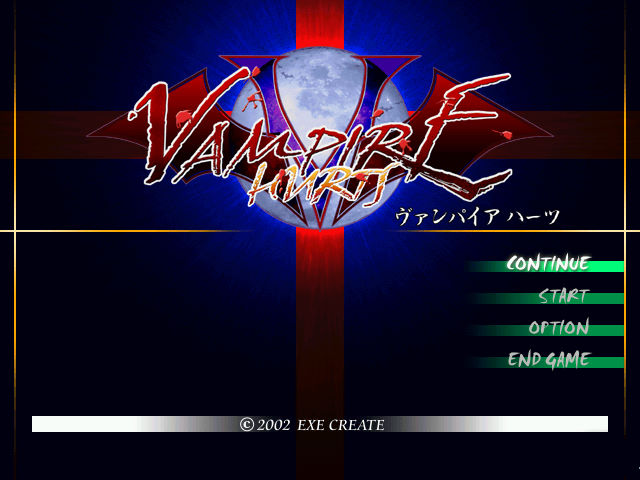
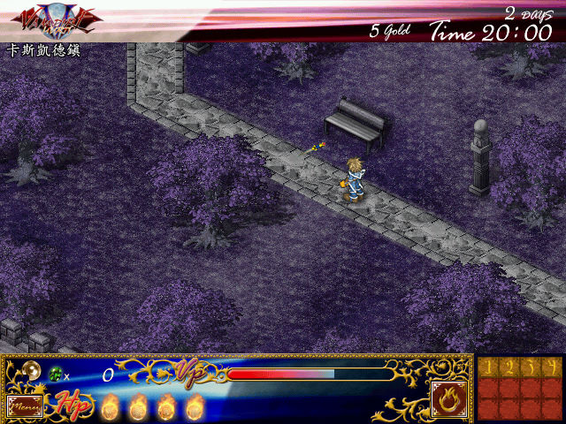

名稱：吸血鬼之傷／吸血迷情 (Vampire Hurts，繁中／簡中版)
簡介：日本Exe Create 2002年出品的角色扮演遊戲，由新天地簡中化並代理發行，2003年由
TGL繁中化並由智冠發行，以斜角3D畫面呈現，採單人即時方式戰鬥 [待補]。


保護：光碟，破解碼：
vh.exe (繁中版)
85 C0 75 0B B8 01
-- -- -- 00 -- --
vampire.exe (簡中版)
0F 8C 6A FF FF FF 39 7C 24 10 75 21
90 90 90 90 90 90 90 90 90 90 EB --